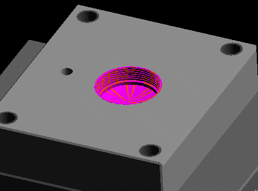
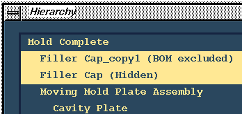

Page 5 of 7


Use the Moving Plates Only configuration.


Show the Filler Cap.


Create an Associative Copy of all the Filler Cap parts surfaces.
Take defaults for hierarchy locations and part name.

Hide the orginal Filler Cap instance.


Cut the Filler Cap Copy instance from the Cavity Plate instance.

Hide the Filler Cap Copy instance.
Next Page